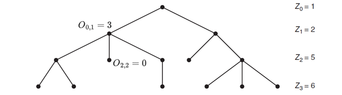
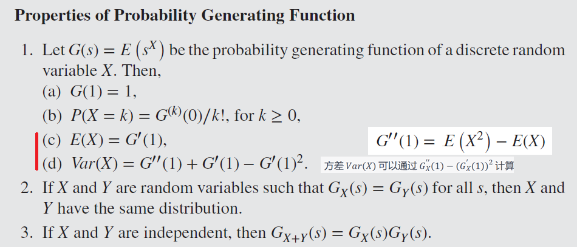
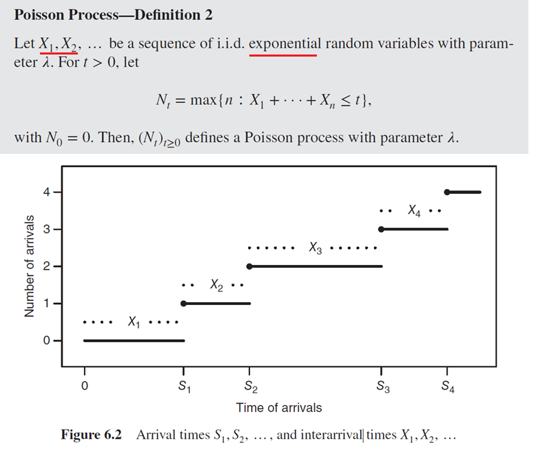
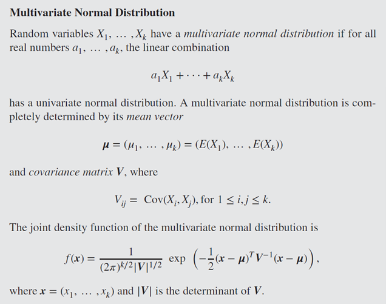

Stochastic
参考
课本：INTRODUCTION TO STOCHASTIC PROCESSES WITH R (略过7.7,8.6)
-
Branching Processes: 知乎，Stackexchange，Lecture2
-
连续时间马尔科夫链: M/M/1排队模型
Review
- 随机过程（Stochastic Process）是一系列随机动作产生的状态的集合 {$X_t \in S$}，其中 {$t \in I$} 是随机过程的索引，$S$是状态空间（State space）
数学提示: Conditional Expectation
$$Var(Y)=E(Y^2)-E(Y)^2 \quad\quad\quad\quad\quad (1)$$ $$Var(Y|X)=E(Y^2|X)-E(Y|X)^2 \quad (2)$$ $$E(Var(Y|X))+Var(E(Y|X)) \quad\quad\quad (3)$$ $$=E(E(Y^2|X)-E(Y|X)^2) + E(E(Y|X)^2)-E(E(Y|X))^2$$ $$=E(Y^2)-E(Y)^2$$ $$=Var(Y)$$Markov Chain
Markov Chain 是随机过程的一种，约定各时刻的状态表示为 {$X_1...X_n$}，下一时刻的状态只由当前时刻决定，即：$P(X_n|X_{n-1},...,X_1)=P(X_n|X_{n-1})$
| -- | Algoritm | -- | $n$ Step 时处于各状态的概率 $=\overrightarrow{\alpha}P^n$ |
|---|---|---|---|
| n | Timestep | -- | -- |
| $P$ | Transition Matrix of Graph | 为半正定矩阵，其行和为1 $P^n = \prod\limits^nP$表示$n$次跳转的概率 |
$P_{ij}=P(X_n=j|X_{n-1}=i)$ 表示单次跳转时，从状态 $i$ 跳转到状态 $j$ 的概率 |
| $\overrightarrow{\alpha}$ | 初始状态向量 | -- | -- |
{kind=link}
{kind=link}
-
Joint Distribution 计算： $$P(X_{t_1}=s_1,X_{t_2}=s_2,...,X_{t_n}=s_n)$$ $$=Prob(1 \rightarrow s_1)Prob(s_1 \rightarrow s_2) ... Prob(s_{n-1} \rightarrow s_n)$$ $$=(\alpha P^{t1})_{s_1} (P^{t_2-t_1})_{s_1,s_2} ... (P^{t_n-t_{n-1}})_{s_{n-1},s_n}$$
-
Limiting Distribution $\rightarrow$ Stationary Distribution
- Limiting Distribution $\lim\limits_{n \rightarrow \infty}P^n_{ij}=\overrightarrow{\lambda_j}$ 即 $\lim\limits_{n \rightarrow \infty}\overrightarrow{\alpha}P^n=\overrightarrow{\lambda}$，此时 $\lim\limits_{n \rightarrow \infty}P^n=\Lambda$ 的每一行都等于$\overrightarrow{\lambda}$
- Stationary Distribution 满足 $\overrightarrow{\pi} = \overrightarrow{\pi}P$
- Limiting 一定 Stationary：$\overrightarrow{\lambda} = \lim\limits_{n \rightarrow \infty}\overrightarrow{\alpha}P^n = \lim\limits_{n \rightarrow \infty}\overrightarrow{\alpha}P^{n-1}P=\overrightarrow{\lambda}P$
- Stationary 不一定 Limiting（除非 Ergodic）: $P = \begin{bmatrix} 1 & 0 \\ 0 & 1 \end{bmatrix}$ 时，状态向量会在 $(\pi1,\pi2)$ 与 $(\pi2,\pi1)$ 间来回切换，且这两个最终状态取决于状态的初始值（而不是P）
-
如果存在$n \ge 1$ 使 $P^n$ 为正定矩阵（所有元素>0），则 $P^n$ 是 Regular Transition Matrix，此时存在对应的 Limiting Distribution
- $P = \begin{bmatrix} 0 & 1 & 0 \\ 0 & 0 & 1 \\ 1 & 0 & 0 \end{bmatrix}$, $P^2 = \begin{bmatrix} 0 & 0 & 1 \\ 1 & 0 & 0 \\ 0 & 1 & 0 \end{bmatrix}$, $P^3 = \begin{bmatrix} 1 & 0 & 0 \\ 0 & 1 & 0 \\ 0 & 0 & 1 \end{bmatrix}$ 则会在多种半正定矩阵中循环（不存在正定的$P^n$，且不 Limiting ）
- 计算 Regular 矩阵的 Stationary Distribution: $\pi P=\pi$
-
对于一个起始于 State $j$ 的 Markov Chain，
- Recurrent 意味着在有限时间内必定再度访问 State $j$：累计访问 $\sum\limits_{n=0}^{\infty}P^n_{jj} = \infty$
- Transient 意味着可能永不再访问 State $j$：累计访问 $\sum\limits_{n=0}^{\infty}P^n_{jj} < \infty$
- 即 "Started in i, the expected number of visits to i is finite"（$\lim\limits_{n \rightarrow \infty}P^n_{jj} = 0$）
-
连通图（同一个communication class，元素相互连通）的 Markov Chain 是 Irreducible 的，各 State 全部 Recurrent，或全部 Transient
- 对于 Infinite Irreducible，可能有 Infinite return time，此时 state 称为 Null Recurrent --- 无限图
- Finite Irreducible 指有限图(State)的情况，此时各 State 全部 Recurrent
-
有一组 State $C$，如果所有$C$中元素都不能访问$C$外元素，则称$C$是Closed，即 $P_{ij}=0$ for all $i \in C,j \notin C$
- 连通图：包含全部 Recurrent States $\rightarrow$ Closed
- 有限连通图：包含全部 Recurrent States $\leftarrow$ Closed
-
对于 Finite Irreducible Markov Chain，存在一个 Stationary 但不一定 Limiting 的 $\pi$,
- $\pi_j=\frac{1}{\mu_j}=\lim\limits_{n \rightarrow \infty}\frac{1}{n}\sum\limits_{m=0}^{n-1}P^m_{ij}$
- with probablity 1, 即 $\sum\limits_{j=1}^{k}\pi_j = \sum\limits_{j=1}^{k}\lim\limits_{n \rightarrow \infty}\frac{1}{n}\sum\limits_{m=0}^{n-1}P^m_{ij} = \lim\limits_{n \rightarrow \infty}\frac{1}{n}\sum\limits_{m=0}^{n-1}\sum\limits_{j=1}^{k}P^m_{ij} = \lim\limits_{n \rightarrow \infty}\frac{1}{n}\sum\limits_{m=0}^{n-1}1 = 1$
- 其中 $\mu_j=E(T_j|X_0=j)$ 指从 $j$ 出发后再次回归 $j$ 所需的时间（步数），如何估算？First-Step Analysis
- 注：根据 Limiting Distribution 的定义，$\lim\limits_{n \rightarrow \infty}P^n$ 的每一行都一样，所以不需要区别 $i$
-
$d(i)=gcd$ {$n >0 : P^n_{ii}>0$} 是 $i \rightarrow i$（状态重现）所有可能步数的最大公约数（greatest common ancestor），即周期（period）
- 若 可能步数集 为空，则 $d(i)=+\infty$
- 若 $d(i)=1$则 state $i$ 是 aperiodic (self-Loop)
- 若 $d(i)>1$则 state $i$ 是 periodic
- Irreducible 时各States周期相同，故而可以谈论 Markov Chain 的 periodic / aperiodic
-
Ergodic Markov Chain 的条件: Irreducible, aperiodic, finite recurrence time
- 此时存在一个 Stationary Distribution $\pi$，同时也是 Limiting Distribution ($\pi_j = \lim\limits_{n \rightarrow \infty}P^n_{ij}$)
- 反例 -- Aperiodic + Reducible:
A <--> B--> C一旦陷入C则不可能再次访问A - 反例 -- Periodic + Irreducible: gcd=2时，t=2,4,6,... 可以观测到一样的状态
-
Reversible Markov Chain 的条件： $\pi_iP_{ij}=\pi_jP_{ji}$ for all $i,j$；其中 $\pi$ 是 Stationary Distribution
-
Absorbing State $i$ 满足：$P_{ii}=1$，如果 Markov Chain 含有多个 Absorbing State，则称其为 Absorbing Chain
{kind=link}
{kind=link}
{kind=link}
{kind=link}
{kind=link}
{kind=link}
{kind=link}
Branching Processes
Branching Processes {$Z_n$} 常用于模拟 Population growth；它是一种 Markov Chain，因为子代个数 $Z_{n+1}$ 仅取决于其父代个数 $Z_{n}$ （以及 Offspring 分布）

-
假设
- $O_{n,i}$ 表示第 $n$ 代第 $i$ 个个体的后代数
- $Z_{n+1}=\sum\limits_{r=1}^{Z_{n}}O_{n,r}$ 表示第 $n+1$ 代的个体数目
- 已知 $P[Z_{n+1}=S_{n+1} | Z_{n}=S_{n} ] = P[\sum\limits_{r=1}^{Z_{n}} O_{n,r}=S_{n+1} | Z_{n}=S_{n} ]= P[\sum\limits_{r=1}^{S_{n}} O_{n,r}=S_{n+1}]$
- Transition matrix 元素 $P^n_{ij} = P(\sum\limits_{r=1}^{i}O_{n,r}=j)$ 表示第 $n$ 代时 $i$ 个个体累计产生 $j$ 个后代的概率；设定 $P^n_{00}=1$
- Absorbing state = 0，即当 $Z_n=0$ 时发生灭绝事件，其余 all nonzero states are transient
- 结局只能是灭绝/无限扩增
-
假设单个个体的后代数目遵从某种概率分布 $a = (a0, a1, a2,…)$，其中 $a_k$ 表示 单个个体产生 $k$ 个后代的概率
- $a_0=0$ 则 Population 永远增加；
- $a_0=1$ 则 $Z_n = 0$ for $n \ge 1$
- 因此假设 $0 < a_0 < 1$ 且 $a_0+a_1 <1$ （即，有一定概率产生多个后代）
- Offspring 分布 $a$ 可以是各种常见分布，比如 Poisson
-
单个个体后代数目分布的均值 $\mu = \sum\limits_{k=0}^{\infty}ka_k$，则第 $n$ 代个数的均值 $E(Z_n)=\mu^n$ （推导过程）
- 灭绝事件 $E: Z_n=0$ 最终发生的概率 $P(E)=\lim\limits_{n \rightarrow \infty}P(Z_n=0)=\lim\limits_{n \rightarrow \infty}1-\mu^n$
- 故而，依据 $\mu$ 的取值，$Z_n$最终可能趋向 $0,1,\infty$ 三种可能
{kind=link}
数学提示: PGF 概率母函数/概率生成函数 Probability generating function $G(s)$
PGF可用于：确认不同分布是否相互独立，计算期望、方差等 $$G_x(s)=E(s^x)=\sum\limits_{x=0}^{\infty}s^xP(x)$$ $$G^{(j)}(0)=j!P(j)$$ $$G''(0)=2P(2)$$ 数学提示: $G(s)$ 的 $n$ 重复合记为 $G^n(s)$
$$G^n(s)=G^{n-1}(G(s))=G(...G(G(s))...)$$- 计算灭绝结局的概率: 当 $\mu>1$ 时，方程 $s=G_k(s)$ 的最小解 $s=min(roots)$ 是走向灭绝结局的概率（当 $\mu \leq 1$ 时灭绝结局概率=1）
- 第 $n$ 代个体数目 $Z_n$ 的 $$G_n(s)=\sum\limits_{k=0}^{\infty}s^kP(Z_n=k)$$
- Offspring 分布 $a$ 的 $$G_a(s)=\sum\limits_{k=0}^{\infty}s^ka_k$$
- $$G_n(s)=E(s^{Z_n})=E(s^{\sum\limits_{k=0}^{Z_{n-1}}O_k})=E([G_a(s)]^{Z_{n-1}})=G_{n-1}(G_a(s))=G_a(G_{n-1}(s))$$
{kind=link}
Markov Chain Monte Carlo (MCMC)
-
Monte Carlo Simulation 是指重复实验/模拟多次后取结果的均值作为期望值的近拟
-
虽然 Markov Chain 并非完全随机，但步数足够大时它的 Monte Carlo 也满足 Strong Law
-
Metropolis–Hastings Algorithm 从 Stationary Distribution $\pi$ 模拟生成 Markov Chain:
- 假设某一步模拟从 state $i$ 开始
- 根据 Transition Matrix 中 $P_{ij}$ 的概率，随机选取一个 $j$
- Acceptance Ratio $\alpha = \frac{\pi_jP_{ji}}{\pi_iP_{ij}}$
- 生成一个 uniform random number $u \sim U(0,1)$
- 若 $u \leq \alpha$ 则下一步是 state $j$，否则下一步依旧停留在 $i$
-
Gibbs sampler 从 m-dimensional joint density $\pi(x_1, x_2, ..., x_m)$ 生成样本 $X^{(t)}=(X^{(t)}_1,X^{(t)}_2,...,X^{(t)}_m)$
- $X^{(t+1)}i$ depends on $X^{(t+1)}{[1,i-1]}$ and $X^{(t)}_{[i+1,m]}$
-
希望少量模拟样本也符合期望分布？问问GPT：Perfect sampling of MCMC
{kind=link}
Poisson Process
-
Counting Process $N(t)$ 是一组随机的正整数，若 $0 \le s \le t$ 意味着 $N(s) \le N(t)$
-
Stationary increments 指对于任意 $h,t > 0$，$(N_{t+h}-N_t)$的分布与 $t$ 无关
- $P(N_{t+h}-N_h=k)=P(N_t-N_0=k)$
- 可将 $N_t - N_0$ 视为 $[0，t]$ 间隔内事件发生的总数
-
Independent increments 指对于 $0 \le t1 \le t2 \le ... \le tn$，各个 $N_{t_n}-N_{t_{n-1}}$ 相互独立
-
一个增速为 $\lambda$ 的 Poisson Process 即是符合如下条件的 Counting Process
- $N_0 = 0$
- $N_t \sim Poisson(\lambda t)$ 即 $t$ 个单位时间里发生的事件为 $\lambda t$ 次 $$P(N_t=k)=\frac{e^{-\lambda t}(\lambda t)^k}{k!}$$
- Stationary increments 即 $$P(N_{t_n}-N_{t_{n-1}}=k) \\ =P(N_t-0=k) \\ =P(N_t=k)$$
- Independent increments
数学提示: 无穷小算子 $o(h)$ 以及 $e^h$ 的泰勒级数
$f(h) = o(h)$ 意味着$$\lim\limits_{h \rightarrow 0}\frac{f(h)}{h} = 0$$ $f(h) = o(g(h))$ 意味着
$$\lim\limits_{h \rightarrow 0}\frac{f(h)}{g(h)} = 0$$ $$e^h = 1 + h + \frac{h^2}{2}+ \frac{h^3}{6} + ... = 1 + h + \frac{h^2}{2}e^{z \in (-h,h)} = 1 + h + o(h)$$
Poisson Process 关于 $o(h)$ 的另一种定义方式
1. $N_0 = 0$2. Stationary increments
3. Independent increments
4. $P(N_h=0) = 1 - \lambda h + o(h)$
5. $P(N_h=1) = \lambda h + o(h)$
6. $P(N_h>1) = o(h)$
-
Thinned Poisson Process 指，给定一个增速为 $\lambda$ 的泊松过程，每次事件都有概率为 $p_1 + p_2 + ... + p_n = 1$ 的 $n$ 种选项，则
- 选项 $n$ 是一个增速为 $p_n\lambda$ 的泊松过程，记为 $N^{(n)}_t$
- $N^{(1)}_t$, $N^{(2)}_t$, ..., $N^{(n)}_t$ 相互独立
-
相应的，Superposition Poisson Process 指，增速为 $\lambda_1,...,\lambda_n$ 的一系列泊松过程可以总结为一个 增速为 $\lambda = \lambda_1 + ... + \lambda_n$ 的泊松过程
Poisson Process 的到达时间、到达间隔
均匀分布：Poisson Process 的第n次到达发生的时间 $S_n = X_1 + X_2 + ... + X_n$
指数分布：Poisson Process 的到达间隔 $X_n = S_n - S_{n-1}$
数学提示: 指数分布是唯一 Memoryless 的连续分布
若对于任意 $h,t > 0$$$P(X > h+t | X > h) = P(X > t)$$
则随机变量 X 是 Memoryless 的
-
以上泊松过程在时间上采样，Spatial Poisson Process 在空间上采样
- $N_{C} \sim Poisson(\lambda |C|)$ 其中 $C$ 指采样面积
-
以上泊松过程的$\lambda$保存恒定，Nonhomogeneous Poisson Process 允许其变化
{kind=link}
{kind=link}
Continuous-Time Markov Chain
关心 Markov Chain 连续时间下的表现，即状态在一段时间内（Duration=t）的持续或跳转。注意，此时的 Transient Matrix $P_{ij}(t)$ 区别于上文的 Chain Transient Matrix $P_{ij}(1)$
t=t2-t1
|
|---------|------|---------------|----------->
0 tu t1 t2
- 如果对于上述时间线，都有 $P(X_{t2}=j|X_{t1}=i,X_{tu}=u) = P(X_{t2}=j|X_{t1}=i)$，则 $X_{t}$ 是 Continuous-Time Markov Chain
- 若上式等于 $P(X_{t1-t2}=j|X_{0}=i)$ 则 Time-Homogeneous，即每个等长的时间模块都一致
- 假设 $T_i$ 是 state $i$ 的持续时间（跳入-跳出），它服从指数分布，其证明 ：$$P(T_i > h+t | X_0=i) = P(T_i > h | X_0=i)P(T_i > t | X_0=i)$$
t
|
|---------|-----[t]-----|----------->
0 h h+t
- Chapman–Kolmogorov Equations
$$P(h+t) = P(h)P(t)$$
$$P_{ij}(h+t) = [P(h)P(t)]_{ij} = \sum\limits_{k} P_{ik}(h)P_{kj}(t)$$
-
生成 Poisson Process & Time-Homogeneous 过程的转移矩阵，其每一个元素 $P_{ij}(t)$ $$= P(N_{h+t} = j | N_{h} = i) $$ $$= \frac{P(N_{h+t} = j,N_{h} = i)}{P(N_{h} = i)} $$ $$= P(N_{h+t} - N_{h} = j-i) $$ $$= P(N_{t} = j-i) $$ $$= \frac{e^{-\lambda t}(-\lambda t)^{j-i}}{(j-i)!}$$
-
当间隔无限小的情况下，定义 initesimal generator $Q$，用法：计算 Absorbing Time 的另一种方法 $$Q_{ij} = P_{ij}'(0) = \lim\limits_{t \rightarrow 0}\frac{P_{ij}(t)-P_{ij}(0)}{h} = \lim\limits_{t \rightarrow 0}\frac{Count(i \rightarrow j) \in (h,h+t]}{h}$$
{kind=link}
$$P'(t) = P(t)Q$$
$$P'(t) = QP(t)$$
- Continuous-Time Markov Chain 也适用普通 Markov Chain 在 Long-term 情况下的定义：Reversible、Limiting、Stationary
- Stationary 意味着 $\pi Q = 0$
Gaussian Processes
数学提示: 多元正态分布（多元高斯分布）
-
Gaussian Processes {$X_{t1},..,X_{tn}$} 服从 均值为$E(X_t)$，协方差矩阵为$V_{ij} = Cov(X_{i \in[1,n]},X_{j \in[1,n]})$ 的多元正态分布
-
Brownian motion 是特殊的高斯分布: 均值为0，$Cov(i,j)=min(i,j)$
- (也类似 Poisson Process 的定义，只是将离散的泊松分布替换成了连续的正态分布)
- Transformations of Brownian Motion
- First Hitting Time: $T_a = min(t: B_t=a)$
{kind=link}
{kind=link}
{kind=link}
Martingale（鞅） 是达成 fair game 的概念/随机过程：（感觉就是指 Memoryless ？）
{kind=link}